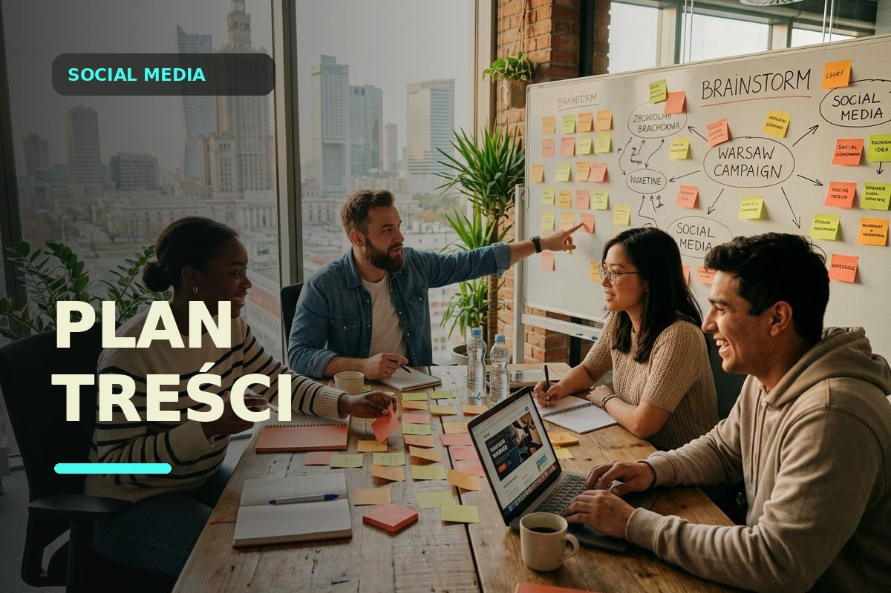

Jak zaplanować miesiąc publikacji w social mediach

Regularność to waluta mediów społecznościowych. Pokażemy Ci, jak w jedno popołudnie przygotować kalendarz treści na cały miesiąc – i przestać codziennie zastanawiać się, co dziś opublikować.
Krok 1: Zacznij od celów
Zanim wymyślisz pierwszy post, odpowiedz sobie na pytanie, co chcesz osiągnąć w tym miesiącu. Więcej zapytań? Większa rozpoznawalność? Promocja konkretnej usługi? Cel podpowie, jakie treści przygotować.
Proporcje treści, które działają
- 40% – treści eksperckie i poradnikowe
- 30% – kulisy firmy i ludzie
- 20% – opinie i realizacje klientów
- 10% – bezpośrednia sprzedaż
Najlepszy post to ten, który odpowiada na pytanie, jakie klient zadałby Ci przy kawie.
Krok 2: Dobierz częstotliwość do kanału
| Kanał | Posty / tydzień | Najlepszy format |
|---|---|---|
| 3–4 | Zdjęcia, wydarzenia | |
| 4–5 | Rolki, karuzele | |
| TikTok | 5–7 | Krótkie wideo |
| 2–3 | Tekst ekspercki |
Krok 3: Przygotuj treści w partiach
Zamiast tworzyć codziennie, zarezerwuj jeden dzień na zdjęcia i nagrania, a drugi na opisy. Praca w partiach skraca czas przygotowania nawet o połowę.
Komentarze (2)
Marek Nowak
Świetny poradnik! Proporcje 40/30/20/10 od razu wdrażam u siebie w piekarni.
Ola Wiśniewska
Praca w partiach to game changer. Polecam też planować posty w zwykłym arkuszu.